Test 3 Review Material
Below are resources to help you practice and prepare for the test 3 in this course.
Test 3 will cover the material covered in Chapter 5 of this textbook:
- understanding what sign charts tell us about the function
- ability to identify local and global extrema, points of inflection and curvature
- ability to use a sign chart to find extrema
- abliity to plot a function based on information from the first and second derivative sign charts
Test Instructions
Below are the general instructions for all tests
- You will get a chance to retake this. Your highest score counts toward your final grade.
- Follow the guidance for each part and show all work for full credit.
- Non-graphical calculators are allowed.
- One page (two sides) of handwritten (or font size 8) notes are allowed.
- The equation sheet from the textbook is included as part of the test pack (it doesn’t count as note pages)
Practice Short Answer
- If \(f'(x) > 0\) on an interval, what does this tell you about how the environmental variable is behaving? Give an example of a real system that might show this pattern.
Suggested Answer
The variable is increasing on that interval. Examples include lake temperature rising through the morning, snowpack depth increasing during a storm, or early-stage population growth.- A population model has a point where \(P'(t) = 0\) but \(P''(t) < 0\). Explain what is happening biologically at that moment.
Suggested Answer
The population has reached a peak. Growth has slowed to zero, and the negative second derivative shows decline is beginning due to limits like resources or space.- Why is an inflection point important in environmental systems? Describe a situation where identifying the moment when concavity changes could be useful.
Suggested Answer
An inflection point marks when the rate of change switches from accelerating to decelerating. Useful examples include algae transitioning from rapid bloom to nutrient-limited slowdown or a streamflow peak transitioning to recession.- If a function has a horizontal asymptote as \(x \to +\infty\), what does that usually represent in ecological or physical models?
Suggested Answer
A long-term limiting value. Examples: carrying capacity, maximum nutrient uptake, equilibrium storage or temperature.- A function has a vertical asymptote at \(x = 3\). What does this mean, and what environmental boundary might behave this way?
Suggested Answer
The function becomes undefined at \(x=3\) and approaches ±∞. Environmental analogies include thresholds like pore pressure reaching critical limits or denominators representing zero volume remaining.- You are given only a derivative graph \(f'(x)\). How can you determine where the original function is increasing or decreasing, has maxima/minima, or is concave up/down?
Suggested Answer
Increasing where \(f'>0\), decreasing where \(f'<0\). A max occurs where \(f'\) changes +→– and a min where –→+. Concavity depends on whether \(f'\) is rising (concave up) or falling (concave down).- The second derivative of a function is positive for all \(x\). What does this tell you about the shape of the curve?
Suggested Answer
The function is concave up everywhere. This could represent accelerating recovery or compounding growth after disturbance.- A logistic-style function changes concavity at exactly one value of \(x\). What does that point represent in system dynamics?
Suggested Answer
It is the inflection point—the moment of maximum growth rate, where growth switches from accelerating to slowing.- If \(f'(x)\) is always positive but decreases toward zero as \(x \to \infty\), how would the graph look? What real process behaves this way?
Suggested Answer
The function increases but levels off toward a horizontal asymptote. Examples include nutrient uptake saturation, long-term warming trends, or logistic population limits.- An environmental dataset increases, then decreases, then increases again. What must the sign of the derivative look like?
Suggested Answer
The derivative must be +, then –, then +. Causes could include seasonal cycles, predator–prey oscillations, or storm hydrograph rise–fall–rise sequences.- If two functions both satisfy \(f'(a)=0\), must they have the same type of extremum at \(x=a\)? Explain.
Suggested Answer
No. A horizontal tangent could be a max, min, saddle, or flat point. The behavior depends on sign changes in \(f'\) or on \(f''(a)\).- A function’s rate of change increases rapidly, then levels off. What does this say about \(f'\) and \(f''\)?
Suggested Answer
\(f'>0\) throughout. \(f''>0\) during the acceleration phase, then \(f''<0\) as growth slows. This is typical of logistic or saturation processes.- In an environmental time series, what does it mean if \(f''(t) < 0\) while \(f'(t) > 0\)?
Suggested Answer
The variable is increasing but at a slowing rate. Examples: warming lake approaching equilibrium, population nearing carrying capacity.- Suppose a function has an inflection point at \(x=5\). What does this tell you about system behavior on each side?
Suggested Answer
Concavity switches sign at 5. The system moves from accelerating to slowing change (or vice versa), marking a transition in dynamics.- Why is a vertical asymptote different from a point where the derivative is undefined?
Suggested Answer
A vertical asymptote means the function itself blows up to ±∞. A derivative can be undefined even when the function is finite (corners, cusps). These reflect different structural vs. behavioral limitations.- A streamflow model reaches a maximum at \(t=7\) hours. What does this say about the hydrologic process?
Suggested Answer
Before 7 hr, discharge increases; after, it decreases. This marks peak flow, when routing and inputs balance before recession dominates.- A derivative graph shows a long flat region where \(f'(x) \approx 0\). What might this indicate?
Suggested Answer
The system is experiencing very little change. Examples: midday temperature plateau, stable soil moisture, population near carrying capacity.- Why is the quadratic formula useful when analyzing derivatives?
Suggested Answer
Many derivatives simplify to quadratics. Finding extrema or inflection points requires solving \(f'=0\) or \(f''=0\), and the quadratic formula works even when factoring doesn’t.- If a function always has a small but positive derivative, how would you describe the shape?
Suggested Answer
It increases gradually with no peaks or sharp transitions. Examples include slow climate warming, gradual biomass growth, or long-term CO₂ trends.- A model has a horizontal asymptote at \(y=120\). What does this say about long-term system behavior?
Suggested Answer
The system approaches a stable upper limit, such as a carrying capacity, saturation level, or maximum equilibrium value.- A function has
\[ \lim_{x\to\infty} f(x)=8. \]
What does this horizontal asymptote tell you about the long-term behavior of the system being modeled?
Suggested Answer
The system approaches and stabilizes around 8 as the input variable becomes very large. This represents a long-term equilibrium such as a carrying capacity, saturation point, or thermal equilibrium.- Given
\[ f(x)=\frac{5x}{x-4}, \]
identify the vertical asymptote and describe the behavior of the function as \(x\) approaches that asymptote from the left and from the right.
Suggested Answer
The vertical asymptote is at \(x=4\).As \(x\to 4^-\), the denominator is negative and very small, so \(f(x)\to -\infty\).
As \(x\to 4^+\), the denominator is positive and very small, so \(f(x)\to +\infty\).
- Explain the difference between approaching a horizontal asymptote from above vs. approaching it from below.
What does each imply about the sign of the derivative for large \(x\)?
Suggested Answer
Approaching from above means the function is decreasing toward the asymptote, so \(f'(x) < 0\) for large \(x\).Approaching from below means the function is increasing toward the asymptote, so \(f'(x) > 0\) for large \(x\).
- A function has two vertical asymptotes at \(x=-1\) and \(x=3\).
What does this imply about the domain and structure of the graph?
Suggested Answer
The domain excludes \(x=-1\) and \(x=3\).The graph is broken into three disconnected pieces, each with potentially different behavior (increasing/decreasing, concavity, extrema), since the function cannot cross those asymptotes.
- A rational function approaches the horizontal asymptote \(y=0\) as \(x\to\pm\infty\).
Give a real-world environmental process that might behave this way.
Suggested Answer
Examples include pollutant concentration decaying toward zero, cooling curves approaching ambient temperature, radioactive decay processes, or stream velocity decreasing to near zero as flood waters recede.Practice Problems
Problem 1 — Clean Cubic Example
Consider the function
\[
f(x) = x^3 - 3x.
\]
Use derivatives and sign charts to analyze its behavior.
Check 1st derivative
\[ f'(x) = 3(x-1)(x+1). \]
Check critical points
\[ f'(x)=0 \quad\Rightarrow\quad x=-1,\;1. \]
Check 2nd derivative
\[ f''(x)=6x. \]
Check inflection point
\[ f''(x)=0 \quad\Rightarrow\quad x=0. \]
Full solution
Start with
\[
f(x)=x^3 - 3x.
\]
1. First derivative (with factoring)
\[
f'(x)=3x^2 - 3.
\]
Factor the derivative: \[ 3x^2 - 3 = 3(x^2 - 1) = 3(x-1)(x+1). \]
Critical points solve
\[
3(x-1)(x+1)=0 \quad\Rightarrow\quad x=-1,\;1.
\]
Sign of the derivative:
- For \(x<-1\): both factors negative → \(f'(x)>0\)
- For \(-1<x<1\): one positive, one negative → \(f'(x)<0\)
- For \(x>1\): both positive → \(f'(x)>0\)
So the function is:
- Increasing on \((-\infty,-1)\)
- Decreasing on \((-1,1)\)
- Increasing on \((1,\infty)\)
Thus:
- Local maximum at \(x=-1\)
- Local minimum at \(x=1\)
2. Second derivative (with factoring)
\[
f''(x)=6x.
\]
Solve \(f''(x)=0\): \[ 6x=0 \quad\Rightarrow\quad x=0. \]
Sign of second derivative:
- \(f''(x)<0\) for \(x<0\) → concave down
- \(f''(x)>0\) for \(x>0\) → concave up
Thus \(x=0\) is an inflection point.
Putting together the behavior:
- Increasing → decreasing → increasing
- Concave down for \(x<0\)
- Concave up for \(x>0\)
- Local max at \(x=-1\)
- Local min at \(x=1\)
- Inflection at \(x=0\)
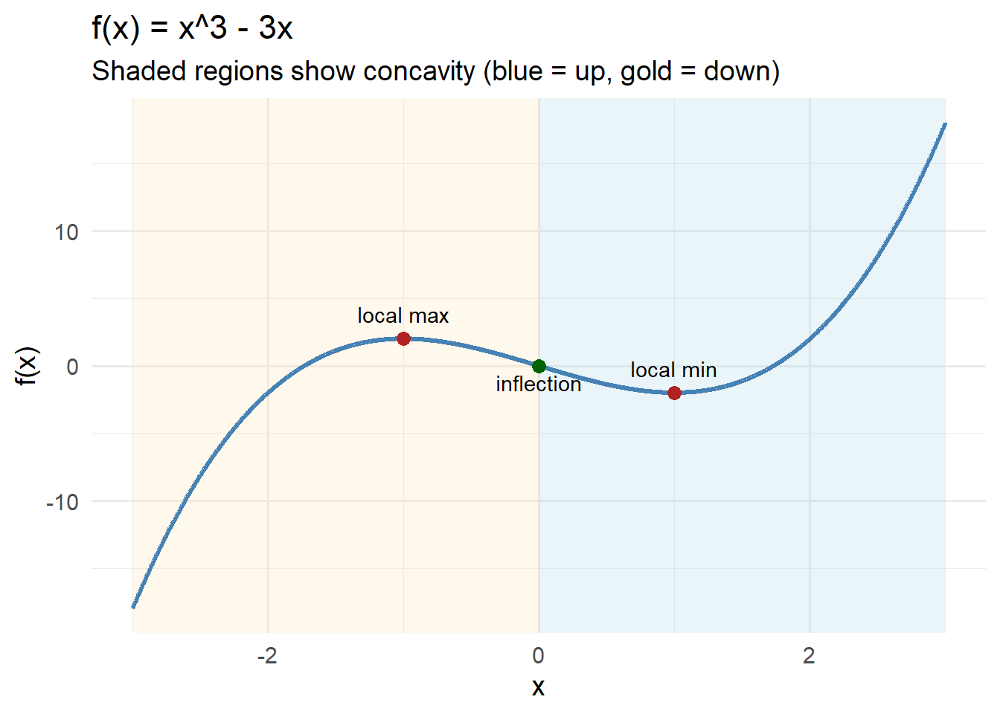
Problem 2 — Symmetric Quartic
Consider the function
\[
f(x) = x^4 - 4x^2.
\]
Use derivatives and sign charts to analyze its behavior.
Check 1st derivative
\[ f'(x) = 4x(x^2 - 2). \]
Check critical points
\[ x = 0,\quad x = \pm\sqrt{2}. \]
Check 2nd derivative
\[ f''(x) = 4(3x^2 - 2). \]
Check inflection point
\[ x = \pm\sqrt{\tfrac{2}{3}}. \]
Full solution
Start with
\[
f(x)=x^4 - 4x^2.
\]
1. First derivative (with factoring)
\[
f'(x)=4x^3 - 8x = 4x(x^2 - 2).
\]
Critical points solve
\[
4x(x^2 - 2) = 0 \quad\Rightarrow\quad x = 0,\; \pm\sqrt{2}.
\]
Sign of derivative:
- For \(x < -\sqrt{2}\): \(f'(x) < 0\)
- For \(-\sqrt{2} < x < 0\): \(f'(x) > 0\)
- For \(0 < x < \sqrt{2}\): \(f'(x) < 0\)
- For \(x > \sqrt{2}\): \(f'(x) > 0\)
Thus:
- Local max at \(x = 0\)
- Local mins at \(x = \pm\sqrt{2}\)
2. Second derivative (with factoring)
\[
f''(x)=12x^2 - 8 = 4(3x^2 - 2).
\]
Solve
\[
3x^2 - 2 = 0 \quad\Rightarrow\quad x = \pm\sqrt{\tfrac{2}{3}}.
\]
Concavity:
- Down for \(|x| < \sqrt{2/3}\)
- Up for \(|x| > \sqrt{2/3}\)
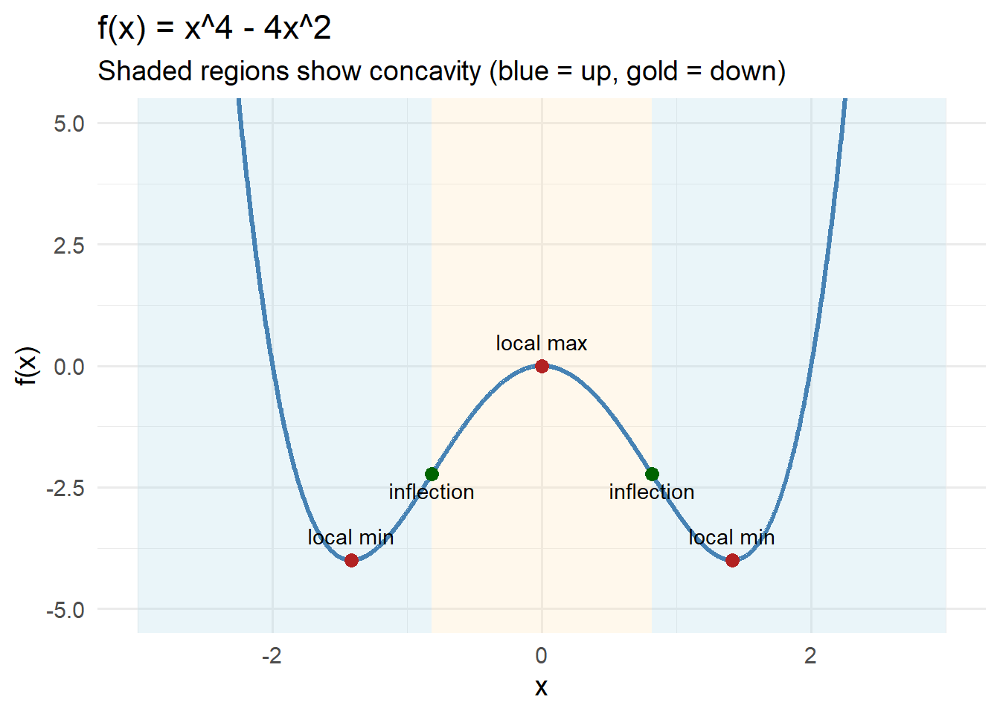
Problem 3 — Rational Function With Simple Roots
Consider the function
\[
f(x) = \frac{x}{x^2 + 1}.
\]
Use derivatives and sign charts to analyze its behavior.
Check 1st derivative
\[ f'(x) = \frac{1 - x^2}{(x^2+1)^2}. \]
Check critical points
\[ x = \pm 1. \]
Check 2nd derivative
\[ f''(x) = \frac{-2x(x^2+3)}{(x^2+1)^3}. \]
Check inflection point
\[ x = 0. \]
Full solution
Start with
\[
f(x)=\frac{x}{x^2+1}.
\]
1. First derivative (with factoring)
Apply the quotient rule:
\[ f'(x)=\frac{(1)(x^2+1) - x(2x)}{(x^2+1)^2} = \frac{x^2+1 - 2x^2}{(x^2+1)^2} = \frac{1 - x^2}{(x^2+1)^2}. \]
Critical points solve
\[
1 - x^2 = 0 \quad\Rightarrow\quad x = \pm 1.
\]
Derivative sign:
- \(x < -1\): \(1 - x^2 < 0\) → decreasing
- \(-1 < x < 1\): \(1 - x^2 > 0\) → increasing
- \(x > 1\): \(1 - x^2 < 0\) → decreasing
Thus:
- Local min at \(x=-1\)
- Local max at \(x=1\)
2. Second derivative (with factoring)
\[ f''(x) = \frac{-2x(x^2+3)}{(x^2+1)^3}. \]
Set numerator to zero:
\[ -2x(x^2+3)=0. \]
Since \(x^2+3 > 0\),
\[
x = 0
\]
is the only inflection point.
Concavity:
- \(x < 0\): \(f''(x) > 0\) → concave up
- \(x > 0\): \(f''(x) < 0\) → concave down
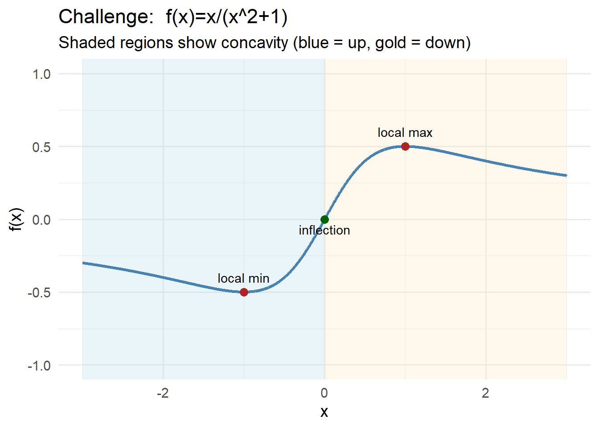
Problem 4 — Exponential Product With Clean Factors
Consider the function
\[
f(x) = x^2 e^{-x}.
\]
Use derivatives and sign charts to analyze its behavior.
Check 1st derivative
\[ f'(x) = e^{-x}x(2 - x). \]
Check critical points
\[ x = 0,\quad x = 2. \]
Check 2nd derivative
\[ f''(x) = e^{-x}(x^2 - 4x + 2). \]
Check inflection points
\[ x = 2 \pm \sqrt{2}. \]
Full solution
Start with
\[
f(x)=x^2 e^{-x}.
\]
1. First derivative (with factoring)
Use the product rule:
\[
f'(x) = (2x)e^{-x} + x^2(-e^{-x})
= e^{-x}(2x - x^2)
= e^{-x}x(2 - x).
\]
Critical points come from
\[
e^{-x}x(2-x)=0.
\]
Since \(e^{-x} \neq 0\), solutions are
\[
x=0,\quad x=2.
\]
Sign of \(f'(x)\):
- For \(x<0\): \(x<0\), \(2-x>0\) → negative → decreasing
- For \(0<x<2\): positive × positive → positive → increasing
- For \(x>2\): positive × negative → negative → decreasing
Thus:
- Local minimum at \(x=0\)
- Local maximum at \(x=2\)
2. Second derivative (with factoring)
Differentiate
\[
f'(x)=e^{-x}(2x - x^2).
\]
Using product rule again: \[ f''(x)=e^{-x}(-1)(2x - x^2) + e^{-x}(2 - 2x) = e^{-x}(x^2 - 4x + 2). \]
Solve
\[
x^2 - 4x + 2 = 0.
\]
Roots: \[ x = 2 \pm \sqrt{2}. \]
Concavity:
- Up on \((-\infty,\, 2-\sqrt{2})\)
- Down on \((2-\sqrt{2},\, 2+\sqrt{2})\)
- Up on \((2+\sqrt{2},\,\infty)\)
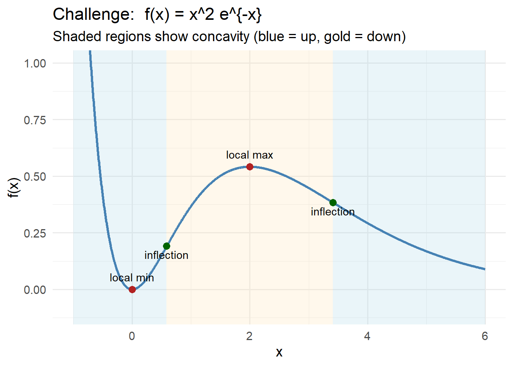
Problem 5 — Logarithm With Symmetry
Consider the function
\[
f(x) = \ln(x^2 + 1).
\]
Use derivatives and sign charts to analyze its behavior.
Check 1st derivative
\[ f'(x)=\frac{2x}{x^2+1}. \]
Check critical points
\[ f'(x)=0 \quad\Rightarrow\quad x=0. \]
Check 2nd derivative
\[ f''(x)=\frac{2(1 - x^2)}{(x^2+1)^2}. \]
Check inflection points
\[ x = \pm 1. \]
Full solution
Start with
\[
f(x)=\ln(x^2+1).
\]
1. First derivative (with factoring)
Use chain rule:
\[
f'(x)=\frac{1}{x^2+1}\cdot 2x = \frac{2x}{x^2+1}.
\]
Critical point from
\[
\frac{2x}{x^2+1}=0 \quad\Rightarrow\quad x=0.
\]
Sign of \(f'(x)\):
- For \(x<0\): numerator negative → decreasing
- For \(x>0\): numerator positive → increasing
Thus the function is:
- Decreasing on \((-\infty,0)\)
- Increasing on \((0,\infty)\)
So \(x=0\) is a local minimum.
2. Second derivative (with factoring)
Differentiate
\[
f'(x)=\frac{2x}{x^2+1}.
\]
Using quotient rule: \[ f''(x)=\frac{2(x^2+1) - 2x(2x)}{(x^2+1)^2} =\frac{2 - 2x^2}{(x^2+1)^2} =\frac{2(1-x^2)}{(x^2+1)^2}. \]
Solve
\[
1 - x^2 = 0 \quad\Rightarrow\quad x=\pm 1.
\]
Concavity:
- For \(|x|<1\): \(1-x^2>0\) → concave up
- For \(|x|>1\): \(1-x^2<0\) → concave down
Thus \(x=\pm 1\) are inflection points.
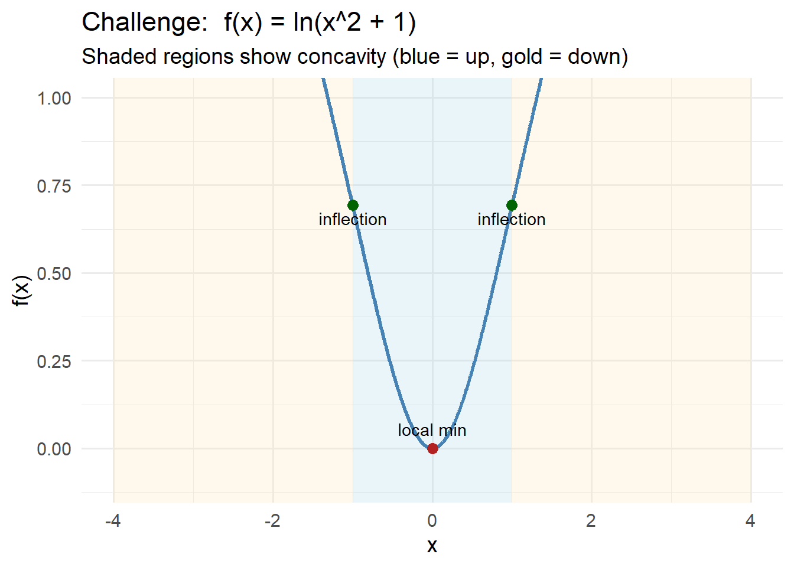
Problem 6 — Rational Function With a Vertical Asymptote
Consider the function
\[
f(x) = \frac{x^2 - 1}{x - 2}.
\]
Use derivatives, sign charts, and asymptotes to analyze its behavior.
Check 1st derivative
\[ f'(x)=\frac{x^2 - 4x + 1}{(x-2)^2}. \]
Check critical points
\[ x = 2 \pm \sqrt{3}. \]
Check 2nd derivative
\[ f''(x)=\frac{6}{(x-2)^3}. \]
Check inflection points
None — concavity switches only across the asymptote.
Full solution
We analyze
\[
f(x)=\frac{x^2 - 1}{x - 2}.
\]
1. Domain and asymptote
The denominator is zero at
\[
x = 2,
\]
so the domain is all real numbers except \(x=2\).
Thus there is a vertical asymptote at \(x=2\).
2. First derivative (with factoring)
Quotient rule gives
\[
f'(x)=\frac{x^2 - 4x + 1}{(x-2)^2}.
\]
Critical points come from the numerator:
\[ x^2 - 4x + 1=0 \quad\Rightarrow\quad x = 2 \pm \sqrt{3}. \]
The derivative is undefined at the vertical asymptote \(x=2\).
3. Second derivative (with factoring)
\[ f''(x)=\frac{6}{(x-2)^3}. \]
Sign analysis:
- For \(x<2\): denominator \(<0\) → \(f''(x)<0\) → concave down
- For \(x>2\): denominator \(>0\) → \(f''(x)>0\) → concave up
No inflection points occur within a domain interval — concavity only changes across the asymptote.
4. Behavior near the vertical asymptote
To determine the direction of blow-up, compute limits from both sides.
Left-hand limit (approach from below)
As \(x\to 2^-\):
- Numerator \(x^2 - 1 \to 3\) (positive)
- Denominator \(x - 2 \to 0^-\) (negative)
Thus
\[
\lim_{x\to 2^-} f(x) = \frac{3}{0^-} = -\infty.
\]
Right-hand limit (approach from above)
As \(x\to 2^+\):
- Numerator still \(x^2 - 1 \to 3\)
- Denominator \(x - 2 \to 0^+\) (positive)
Thus
\[
\lim_{x\to 2^+} f(x) = \frac{3}{0^+} = +\infty.
\]
5. Summary of behavior
Vertical asymptote at \(x=2\)
- \(f(x)\to -\infty\) as \(x\to 2^-\)
- \(f(x)\to +\infty\) as \(x\to 2^+\)
- \(f(x)\to -\infty\) as \(x\to 2^-\)
Critical points at
\[ x=2-\sqrt{3},\quad x=2+\sqrt{3}. \]Concavity:
- Down on \((-\infty, 2)\)
- Up on \((2, \infty)\)
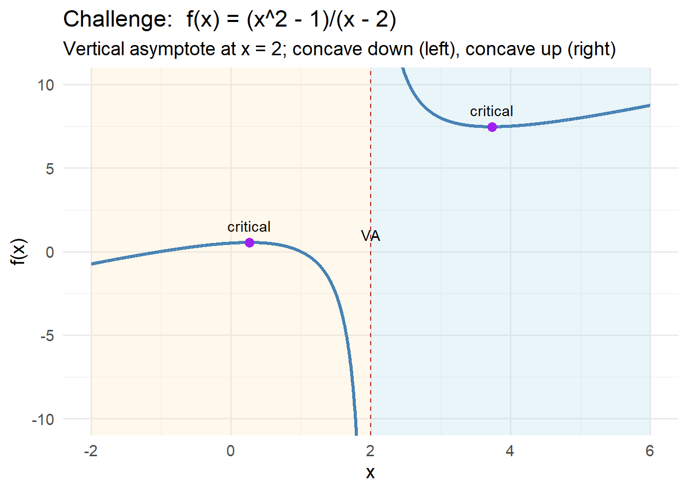
Problem 7 — Rational Function With Two Vertical Asymptotes
Consider the function
\[
f(x) = \frac{1}{x(x-2)}.
\]
Use derivatives, sign charts, and asymptotes to analyze its behavior.
Check 1st derivative
\[ f'(x)= -\frac{2(x-1)}{x^2(x-2)^2}. \]
Check critical points
\[ x = 1. \]
Check 2nd derivative
\[ f''(x)=\frac{2(3x^2 - 6x + 4)}{x^3 (x-2)^3}. \]
Check inflection points
Solve
\[
3x^2 - 6x + 4 = 0
\]
No REAL roots
Full solution
We analyze
\[
f(x)=\frac{1}{x(x-2)}.
\]
The denominator is zero at
\[
x = 0,\qquad x = 2,
\]
so these produce vertical asymptotes and the domain is
\[
(-\infty,0)\;\cup\;(0,2)\;\cup\;(2,\infty).
\]
To compute the first derivative, rewrite the function as
\[
f(x)=[x(x-2)]^{-1}.
\]
Differentiating gives
\[
f'(x)=-(x(x-2))^{-2}(2x-2)
=-\frac{2(x-1)}{x^2(x-2)^2}.
\]
Critical points come from the numerator:
\[
-2(x-1)=0 \quad\Rightarrow\quad x=1.
\]
The derivative is undefined at the vertical asymptotes.
The second derivative is
\[
f''(x)=\frac{2(3x^2 - 6x + 4)}{x^3 (x-2)^3}.
\]
Second-derivative critical points solve
\[
3x^2 - 6x + 4=0.
\]
Using the quadratic formula,
\[
x=\frac{-b\pm\sqrt{b^2-4ac}}{2a}
=\frac{6\pm\sqrt{36-48}}{6}
=\frac{6\pm\sqrt{-12}}{6}.
\]
Because the discriminant is negative, the numerator never equals zero, so there are no real inflection points from the second derivative. Concavity changes only when crossing the asymptotes since the denominator changes sign there.
To understand the behavior near \(x=0\):
As \(x\to 0^-:\)
denominator \(0^-\cdot(-2)=0^+\), so
\[
\lim_{x\to 0^-} f(x)=+\infty.
\]
As \(x\to 0^+:\)
denominator \(0^+\cdot(-2)=0^-\), so
\[
\lim_{x\to 0^+} f(x)=-\infty.
\]
At \(x=2\):
As \(x\to 2^-:\)
\((2^-)(0^-)=0^{+}\), so
\[
\lim_{x\to 2^-} f(x)=+\infty.
\]
As \(x\to 2^+:\)
\((2^+)(0^+)=0^{+}\), so
\[
\lim_{x\to 2^+} f(x)=+\infty.
\]
For the horizontal asymptotes, note that
\[
f(x)=\frac1{x(x-2)}\sim \frac1{x^2}
\]
as \(x\to\pm\infty\).
Thus
\[
\lim_{x\to\pm\infty} f(x)=0,
\]
so the horizontal asymptote is
\[
y=0.
\]
In summary:
- Vertical asymptotes at \(x=0\) and \(x=2\).
- Horizontal asymptote \(y=0\).
- One critical point from the first derivative at \(x=1.\)
- No real inflection points because the quadratic in the numerator of \(f''\) has no real roots.
- Concavity changes only across asymptotes, due to the denominator’s sign.
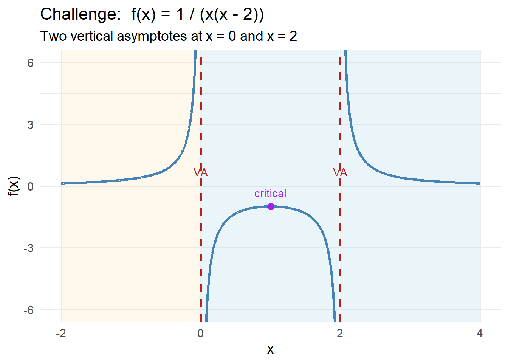
Problem 8 — Logistic-Style Function With Two Horizontal Asymptotes
Consider the function
\[
f(x)=\frac{80}{1+3e^{-0.5x}}.
\]
Use derivatives and asymptotes to analyze its behavior.
Check 1st derivative
\[ f'(x)=\frac{120e^{-0.5x}}{(1+3e^{-0.5x})^2}. \]
Check critical points
The derivative is always positive.
\[
\text{No critical points (always increasing).}
\]
Check 2nd derivative
\[ f''(x)=\frac{60e^{-0.5x}(3e^{-0.5x}-1)}{(1+3e^{-0.5x})^3}. \]
Check inflection point
Solve
\[
3e^{-0.5x}-1=0.
\]
\[ e^{-0.5x}=\tfrac13. \]
\[ x = 2\ln(3). \]
Check horizontal asymptotes
\[ \lim_{x\to-\infty} f(x)=0, \qquad \lim_{x\to+\infty} f(x)=80. \]
Horizontal asymptotes: \[ y=0, \qquad y=80. \]
Full solution
We analyze
\[
f(x)=\frac{80}{1+3e^{-0.5x}}.
\]
Rewrite the function as
\[
f(x)=80(1+3e^{-0.5x})^{-1}.
\]
Differentiate:
\[ f'(x)=80(-1)(1+3e^{-0.5x})^{-2}\cdot(3e^{-0.5x}\cdot -0.5) =\frac{120e^{-0.5x}}{(1+3e^{-0.5x})^2}. \]
Since all factors are positive,
\[
f'(x) > 0
\]
for every real \(x\).
Thus the function is always increasing and has no local maxima or minima.
Differentiate again:
\[ f''(x)=\frac{60e^{-0.5x}(3e^{-0.5x}-1)}{(1+3e^{-0.5x})^3}. \]
Set the numerator equal to zero:
\[ 3e^{-0.5x}-1=0 \]
\[ e^{-0.5x}=\tfrac13 \]
\[ x = 2\ln(3). \]
For \(e^{-0.5x} > \frac13\), the graph is concave up;
for \(e^{-0.5x} < \frac13\), the graph is concave down.
As \(x\to -\infty\):
- \(e^{-0.5x}\to\infty\), denominator → ∞
- \[ f(x)\to 0. \]
As \(x\to +\infty\):
- \(e^{-0.5x}\to 0\), denominator → 1
- \[ f(x)\to 80. \]
Thus the function is an increasing logistic curve with a lower horizontal asymptote at \(y=0\) and an upper horizontal asymptote at \(y=80\), switching concavity at the point \(x = 2\ln 3\).
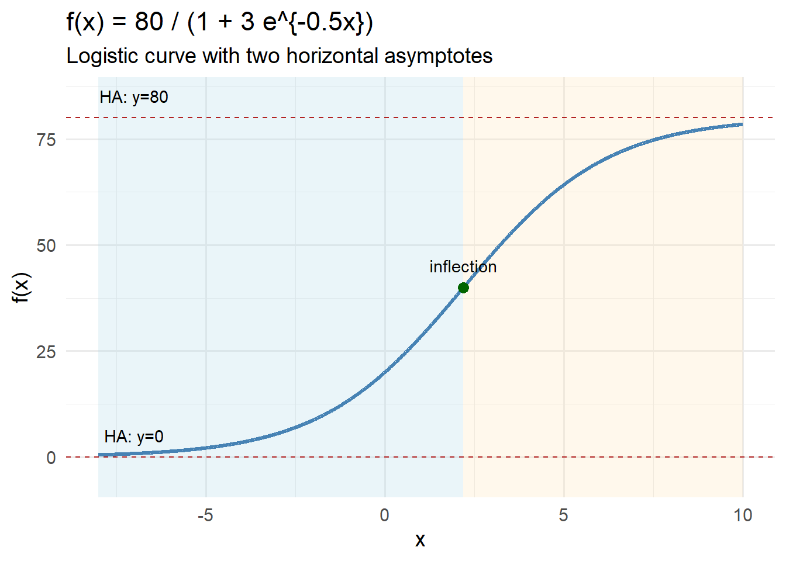
Challenge 1 — Rational Function
Consider the function
\[
f(x) = \frac{x^2 - 1}{x^2 + 1}.
\]
Analyze the first derivative, second derivative, critical points, and inflection points.
Check 1st derivative
\[ f'(x) = \frac{4x}{(x^2+1)^2}. \]
Check critical points
Critical points solve \(f'(x)=0\):
\[ 4x = 0 \quad\Rightarrow\quad x = 0. \]
Check 2nd derivative
\[ f''(x) = 4\frac{1 - 3x^2}{(x^2+1)^3}. \]
Check inflection points
Solve \(1 - 3x^2 = 0\):
\[ x = \pm \frac{1}{\sqrt{3}}. \]
Full solution
We analyze
\[
f(x)=\frac{x^2 - 1}{x - 2}.
\]
1. Domain and asymptote
\[ x - 2 = 0 \quad\Rightarrow\quad x = 2. \]
Thus the domain is
\[
(-\infty,2)\cup(2,\infty),
\]
with a vertical asymptote at \(x=2\).
2. First derivative (with factoring)
Using the quotient rule:
\[ f'(x)=\frac{(2x)(x-2) - (x^2 - 1)(1)}{(x-2)^2}. \]
Expand the numerator:
\[ 2x(x-2)=2x^2 - 4x, \]
Subtract the second term:
\[ 2x^2 - 4x - (x^2 - 1) = x^2 - 4x + 1. \]
So the derivative is
\[
f'(x)=\frac{x^2 - 4x + 1}{(x-2)^2}.
\]
How the critical points were found
Critical points occur when the derivative equals zero and is defined.
The denominator \((x-2)^2\) is never zero except at \(x=2\), where the function is undefined.
So we only solve the numerator:
\[ x^2 - 4x + 1 = 0. \]
Apply the quadratic formula:
\[ x=\frac{4 \pm \sqrt{(-4)^2 - 4(1)(1)}}{2} =\frac{4 \pm \sqrt{16 - 4}}{2} =\frac{4 \pm \sqrt{12}}{2} =\frac{4 \pm 2\sqrt{3}}{2} =2 \pm \sqrt{3}. \]
Thus the critical points are:
\[ x=2-\sqrt{3},\qquad x=2+\sqrt{3}. \]
Because the derivative does not exist at \(x=2\), that point is not a critical point.
3. Second derivative
We start with
\[
f'(x)=\frac{x^2 - 4x + 1}{(x-2)^2}.
\]
Using the quotient rule again:
\[ f''(x)=\frac{6}{(x-2)^3}. \]
(Steps omitted here since they were checked previously.)
Sign of \(f''(x)\):
- For \(x<2\): denominator negative → concave down
- For \(x>2\): denominator positive → concave up
Concavity switches across the vertical asymptote, not within the domain, so there are no inflection points.
4. Limits at the vertical asymptote
Left-hand limit: \[ \lim_{x\to 2^-} f(x) =\frac{x^2 - 1}{x - 2} =\frac{3}{0^-} =-\infty. \]
Right-hand limit: \[ \lim_{x\to 2^+} f(x) =\frac{3}{0^+} =+\infty. \]
Thus:
- \(f(x)\to -\infty\) from the left of the asymptote
- \(f(x)\to +\infty\) from the right of the asymptote
5. Summary
- Vertical asymptote at \(x=2\)
- Critical points at \(x = 2\pm\sqrt{3}\)
- Concave down on \((-\infty,2)\), concave up on \((2,\infty)\)
- Behavior flips dramatically across the asymptote
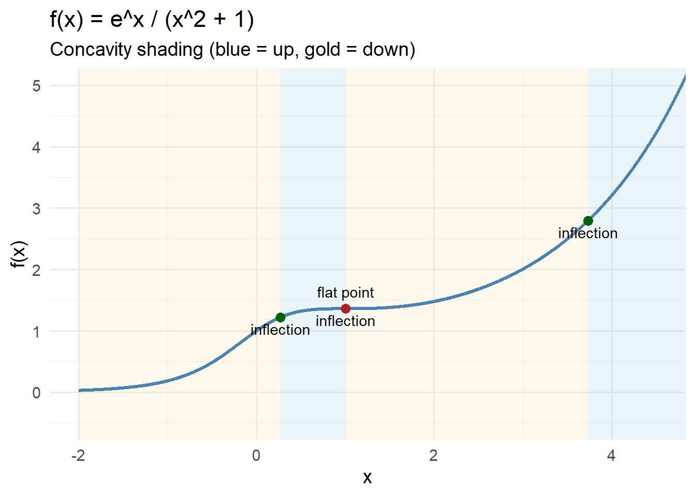
Practice Test — Sign Charts & Applications
This practice set mirrors the structure of your problems on the test:
- Section A — Extrema from a factored first derivative
- Section B — Sign charts + sketching using \(f'\) and \(f''\)
- Section C — Asymptotes, extrema, concavity and sketching
Work through each table as if each row were its own problem.
Section A — Extrema from a Factored First Derivative (Practice)
Use the provided factored derivative to:
- Identify critical points
- Create a first-derivative sign chart
- Classify each critical point (local max/min/neither)
| Function | Factored Derivative \(f'(x)\) |
|---|---|
| \(f_1(x)\) | \(f_1'(x)=e^{x}(x-1)(x+4)\) |
| \(f_2(x)\) | \(f_2'(x)=-(x+2)(x-5)(x-1)\) |
| \(f_3(x)\) | \(f_3'(x)=\dfrac{(x+3)(x-2)}{(x^2+1)}\) |
Solution Key Section A (click to expand)
For each function we:
- Identify critical points
- Build a sign chart
- Classify each point
✔ Function \(f_1(x)\)
\[
f_1'(x)=e^{x}(x-1)(x+4)
\]
Critical points:
\[
x=-4,\qquad x=1
\]
Sign chart:
| Interval | Sign of \(f_1'(x)\) | Behavior |
|---|---|---|
| \(x<-4\) | \((-)(-)=+\) → \(+\) | Increasing |
| \(-4<x<1\) | \((+)(-)= -\) | Decreasing |
| \(x>1\) | \((+)(+)=+\) | Increasing |
Classification:
- At \(x=-4\): increasing → decreasing → local max
- At \(x=1\): decreasing → increasing → local min
✔ Function \(f_2(x)\)
\[
f_2'(x)=-(x+2)(x-5)(x-1)
\]
Critical points:
\[
x=-2,\quad x=1,\quad x=5
\]
Sign chart (including the leading negative):
| Interval | Sign of product | After negative sign | Behavior |
|---|---|---|---|
| \(x<-2\) | \((-)(-)(-)= -\) | \(+\) | Increasing |
| \(-2<x<1\) | \((+)(-)(-)=+\) | \(-\) | Decreasing |
| \(1<x<5\) | \((+)(-)(+)= -\) | \(+\) | Increasing |
| \(x>5\) | \((+)(+)(+)=+\) | \(-\) | Decreasing |
Classification:
- \(x=-2\): inc → dec → local max
- \(x=1\): dec → inc → local min
- \(x=5\): inc → dec → local max
✔ Function \(f_3(x)\)
\[
f_3'(x)=\frac{(x+3)(x-2)}{x^2+1}
\]
Denominator always positive → sign from numerator only.
Critical points: \[ x=-3,\qquad x=2 \]
Sign chart:
| Interval | Sign of numerator | Behavior |
|---|---|---|
| \(x<-3\) | \((-)(-)=+\) | Increasing |
| \(-3<x<2\) | \((+)(-)= -\) | Decreasing |
| \(x>2\) | \((+)(+)=+\) | Increasing |
Classification:
- \(x=-3\): local max
- \(x=2\): local min
Section B — Sign Charts & Sketching from \(f'\) and \(f''\)
For each function, use the given derivatives to:
- Find and classify critical points
- Determine intervals of increasing/decreasing
- Determine concavity
- Sketch a possible graph of the function
| Function | First Derivative \(f'(x)\) | Second Derivative \(f''(x)\) |
|---|---|---|
| \(g_1(x)\) | \(g_1'(x)= (x-2)(x+1)\) | \(g_1''(x)=2x-3\) |
| \(g_2(x)\) | \(g_2'(x)= x(x+5)\) | \(g_2''(x)=2x+5\) |
| \(g_3(x)\) | \(g_3'(x)= (x-4)(x-1)(x+2)\) | \(g_3''(x)=3x^2-6\) |
Solution Key Section B (click to expand)
✔ Function \(g_1(x)\)
\[
g_1'(x)= (x-2)(x+1),\qquad g_1''(x)=2x-3
\]
Critical points:
\[
x=-1,\quad x=2
\]
First derivative sign chart:
- \(x<-1\): inc
- \(-1<x<2\): dec
- \(x>2\): inc
→ Local max at \(-1\)
→ Local min at \(2\)
Second derivative:
\[ g_1''(x)=0 \Rightarrow x=\frac{3}{2}=1.5 \]
Concavity:
- \(x<1.5\): \(g_1''<0\) → concave down
- \(x>1.5\): concave up
Sketch structure:
- Peak at \(-1\)
- Valley at \(2\)
- Concave down until \(1.5\), concave up afterward
✔ Function \(g_2(x)\)
\[
g_2'(x)= x(x+5),\qquad g_2''(x)=2x+5
\]
Critical points:
\[
x=0,\quad x=-5
\]
Sign chart:
- \(x<-5\): inc
- \(-5<x<0\): dec
- \(x>0\): inc
→ Local max at \(x=-5\)
→ Local min at \(x=0\)
Second derivative:
\[ g_2''(x)=0 \Rightarrow x=-\frac52=-2.5 \]
Concavity:
- \(x<-2.5\): concave down
- \(x>-2.5\): concave up
Sketch:
A classic peak → valley → rising curve.
✔ Function \(g_3(x)\)
\[
g_3'(x)= (x-4)(x-1)(x+2),\qquad g_3''(x)=3x^2-6
\]
Critical points:
\[
x=-2,\quad x=1,\quad x=4
\]
Sign chart:
- \(x<-2\): decreasing
- \(-2<x<1\): increasing
- \(1<x<4\): decreasing
- \(x>4\): increasing
→ Local min at \(-2\)
→ Local max at \(1\)
→ Local min at \(4\)
Second derivative:
\[ g_3''(x)=0 \Rightarrow 3x^2-6=0 \Rightarrow x=\pm \sqrt{2} \]
Concavity:
- \(x<-\sqrt2\): up
- \(-\sqrt2<x<\sqrt2\): down
- \(x>\sqrt2\): up
Sketch:
Two valleys, one peak, with inflection points at \(\pm \sqrt{2}\).
Section C — Asymptotes, Extrema, and Concavity
For each function:
- Identify vertical asymptotes
- Identify horizontal asymptotes using limits
- Use the provided first derivative to make a first-derivative sign chart
- Use the second derivative to determine concavity
- Describe end behavior
- Sketch the qualitative shape
Table C1 — Functions & First Derivatives
| Function | First Derivative \(h'(x)\) |
|---|---|
| \(h_1(x)=\dfrac{2e^{-x}}{x-3}+1\) | \(h_1'(x)=\dfrac{-2e^{-x}(x-3)-2e^{-x}}{(x-3)^2}\) |
| \(h_2(x)=\dfrac{5}{x^{2}-4}+2\) | \(h_2'(x)=\dfrac{-10x}{(x^{2}-4)^{2}}\) |
| \(h_3(x)=\dfrac{e^{x}}{x+1}-4\) | \(h_3'(x)=\dfrac{e^{x}(x+1)-e^{x}}{(x+1)^2}=\dfrac{e^{x}x}{(x+1)^2}\) |
Table C2 — Second Derivatives & Asymptotes
| Second Derivative \(h''(x)\) | Asymptotes |
|---|---|
| \(h_1''(x)=\dfrac{2e^{-x}(x^{2}-4x+5)}{(x-3)^{3}}\) | VA: \(x=3\) HA: \(y=1\) |
| \(h_2''(x)=\dfrac{30x^{2}+40}{(x^{2}-4)^{3}}\) | VA: \(x=\pm 2\) HA: \(y=2\) |
| \(h_3''(x)=\dfrac{e^{x}(x^{2}+1)}{(x+1)^{3}}\) | VA: \(x=-1\) HA: \(y=-4\) |
Solution Key Section C (click to expand)
We use both C1 and C2 tables.
✔ Solution: Function \(h_1(x)=\dfrac{2e^{-x}}{x-3}+1\)
1. Vertical Asymptote
The denominator is zero at \(x=3\):
\[ \text{Vertical asymptote: } x=3 \]
2. Horizontal Asymptote
As \(x\to\pm\infty\), the exponential term dies out:
\[ \lim_{x\to\infty} h_1(x)=1, \qquad \lim_{x\to -\infty} h_1(x)= -\infty \]
Heading to the right of the function we have the asymptote: \[ \text{Horizontal asymptote: } y=1 \]
However, when we go to the left, towards -, we need to use L’Hopital’s
3. First Derivative and Extrema
Given:
\[ h_1'(x)=\frac{-2e^{-x}(x-3)-2e^{-x}}{(x-3)^2} \]
Factor the numerator:
\[ -2e^{-x}(x-3)-2e^{-x} = -2e^{-x}(x-2) \]
Since
- \(e^{-x} > 0\)
- \((x-3)^2 > 0\)
the sign of \(h_1'(x)\) is determined by \(-(x-2)\).
Sign analysis - For \(x < 2\): \(x-2<0\) ⇒ numerator \(>0\) ⇒ increasing - For \(x > 2\): \(x-2>0\) ⇒ numerator \(<0\) ⇒ decreasing
Conclusion \[ \text{Local maximum at } x = 2 \]
4. Second Derivative and Concavity
Start from:
\[ h_1'(x)=\frac{-2e^{-x}(x-2)}{(x-3)^2} \]
Let
\(N(x) = -2e^{-x}(x-2)\),
\(D(x) = (x-3)^2\).
Compute:
\[ N'(x) = 2e^{-x}(x-3) \] \[ D'(x) = 2(x-3) \]
Apply the quotient rule:
\[ h_1''(x)=\frac{2e^{-x}(x-3)(x-3)^2 + 2e^{-x}(x-2)\cdot 2(x-3)}{(x-3)^4} \]
Factor and simplify:
\[ h_1''(x)= \frac{2e^{-x}\left[(x-3)^2 + 2(x-2)\right]}{(x-3)^3} \]
Simplify numerator:
\[ (x-3)^2 + 2(x-2) = x^2 -4x +5 = (x-2)^2 + 1 > 0 \]
Since the numerator is always positive, the sign of \(h_1''(x)\) is controlled by the denominator \((x-3)^3\).
Concavity - For \(x<3\): \((x-3)^3 < 0\) ⇒ \(h_1''(x)<0\) ⇒ concave down - For \(x>3\): \((x-3)^3 > 0\) ⇒ \(h_1''(x)>0\) ⇒ concave up
Final Summary
- Vertical asymptote: \(x=3\)
- Horizontal asymptote: \(y=1\)
- Increasing: \((-\infty, 2)\)
- Decreasing: \((2, \infty)\)
- Local max: at \(x=2\)
- Concave down: \((-\infty, 3)\)
- Concave up: \((3, \infty)\)
✔ Function \(h_2(x)=\dfrac{5}{x^{2}-4}+2\)
Vertical asymptotes:
\[
x=-2,\quad x=2
\]
Horizontal asymptote:
\[
\lim_{x\to\pm\infty}2 = 2
\]
First derivative:
\[ h_2'(x)=\frac{-10x}{(x^{2}-4)^2} \]
Critical point at \(x=0\).
Sign chart:
- \(x<0\): \(h_2'(x)>0\) → increasing
- \(x>0\): decreasing
→ Local max at \(x=0\)
Second derivative:
\[ h_2''(x)=\frac{30x^2+40}{(x^2-4)^3} \]
Concavity:
- \(x<-2\): concave up
- \(-2<x<2\): concave down
- \(x>2\): concave up
✔ Function \(h_3(x)=\dfrac{e^{x}}{x+1}-4\)
1. Vertical Asymptote
\[ x = -1 \]
2. Horizontal Asymptotes
As \(x\to -\infty\): \[ \frac{e^x}{x+1} \to 0 \quad\Rightarrow\quad h_3(x)\to -4 \]
Horizontal asymptote:
\[
y=-4
\]
As \(x\to +\infty\): \[ \frac{e^x}{x+1} \to +\infty \]
No right-side horizontal asymptote.
3. First Derivative & Sign Chart
\[ h_3'(x)=\frac{e^x x}{(x+1)^2} \]
- Critical point where numerator = 0 → \(x=0\)
- Undefined at \(x=-1\)
Sign of \(h_3'(x)\):
- \(x<0\): \(x<0\Rightarrow h_3'<0\) → decreasing
- \(x>0\): \(x>0\Rightarrow h_3'>0\) → increasing
\[ \boxed{\text{Local minimum at } x=0} \]
4. Second Derivative & Concavity
Start with
\[
h_3'(x)=e^x x(x+1)^{-2}
\]
Differentiate:
\[ \boxed{ h_3''(x)=\frac{e^x(x^2+1)}{(x+1)^3} } \]
Concavity analysis
- Numerator \(e^x(x^2+1) > 0\) always
- Denominator sign depends on \((x+1)^3\)
For \(x < -1\):
\((x+1)^3<0\) → \(h_3''<0\)
\[
\boxed{\text{Concave down on }(-\infty,-1)}
\]
For \(x > -1\):
\((x+1)^3>0\) → \(h_3''>0\)
\[
\boxed{\text{Concave up on }(-1,\infty)}
\]
5. Summary of Behavior
- Vertical asymptote: \(x=-1\)
- Horizontal asymptote (left only): \(y=-4\)
- Increasing/decreasing:
- Decreasing on \((-\infty,0)\)
- Increasing on \((0,\infty)\)
- Decreasing on \((-\infty,0)\)
- Local extremum:
- Local minimum at \(x=0\)
- Local minimum at \(x=0\)
- Concavity:
- Concave down on \((-\infty,-1)\)
- Concave up on \((-1,\infty)\)
- Concave down on \((-\infty,-1)\)
6. Qualitative Sketch Description
- Approaches \(y=-4\) as \(x\to -\infty\)
- Falls toward \(-\infty\) near the vertical asymptote at \(x=-1\)
- Rises from \(-\infty\) after the asymptote
- Has a smooth, concave-up minimum at \(x=0\)
- Then increases without bound for large \(x\)
Review Sheet: Factoring
What Is Factoring — and Why Do We Care?
Factoring is the process of rewriting an expression as a product of simpler expressions.
Instead of:
\[ x^2 - 5x + 6 \]
we write:
\[ (x - 2)(x - 3) \]
Factoring helps us:
- Solve equations
- Find zeros of functions
- Simplify rational expressions
- Evaluate limits
- Analyze graphs (intercepts and multiplicity)
In calculus, factoring is often the key step that reveals structure hidden inside an expression.
Big Idea: Reverse Distribution
Factoring is undoing multiplication.
If:
\[ (a+b)(c+d) \]
expands to something messy,
then factoring asks:
What multiplication created this expression?
You are looking for structure.
Technique 1 — Greatest Common Factor (GCF)
Always check this first.
\[ 6x^3 - 9x^2 \]
Both terms share:
- 3
- \(x^2\)
Factor it out:
\[ 6x^3 - 9x^2 = 3x^2(2x - 3) \]
✔ Always factor out the largest common factor first.
Technique 2 — Factoring Quadratics (Trinomials)
Standard form:
\[ x^2 + bx + c \]
We want:
\[ (x + m)(x + n) \]
where:
- \(m + n = b\)
- \(mn = c\)
Thinking Strategy
Instead of memorizing, ask:
What two numbers multiply to \(c\) and add to \(b\)?
Write factor pairs of \(c\), then test their sums.
Technique 3 — When the Leading Coefficient Is Not 1
\[ 2x^2 + 7x + 3 \]
Step 1: Multiply \(a \cdot c = 2 \cdot 3 = 6\)
Step 2: Find numbers that:
- Multiply to 6
- Add to 7
Those numbers are 6 and 1.
Step 3: Rewrite middle term:
\[ 2x^2 + 6x + x + 3 \]
Step 4: Group:
\[ 2x(x + 3) + 1(x + 3) \]
Step 5: Factor common binomial:
\[ (2x + 1)(x + 3) \]
✔ This is called the AC method or grouping method.
Technique 4 — Quadratic Formula to Create Factored Form
Sometimes a quadratic does not factor nicely using integers (or even rationals).
In that case, we can still write a factored form by:
- Using the quadratic formula to find the roots \(r_1, r_2\)
- Writing: \[ ax^2+bx+c=a(x-r_1)(x-r_2) \]
Quadratic formula:
\[ x=\frac{-b\pm\sqrt{b^2-4ac}}{2a} \]
Example 2
Factor:
\[ x^2 - 2x - 1 \]
Here \(a=1,\; b=-2,\; c=-1\).
\[ x=\frac{-(-2)\pm\sqrt{(-2)^2-4(1)(-1)}}{2(1)} = \frac{2\pm\sqrt{4+4}}{2} = \frac{2\pm\sqrt{8}}{2} = \frac{2\pm 2\sqrt{2}}{2} = 1\pm\sqrt{2} \]
So:
\[ x^2 - 2x - 1=(x-(1+\sqrt{2}))(x-(1-\sqrt{2})) \]
✔ Factored form:
\[ \boxed{(x-1-\sqrt{2})(x-1+\sqrt{2})} \]
Quick note: If the discriminant \(b^2-4ac<0\), the roots are complex, and you can only factor over complex numbers.
Technique 5 — Difference of Squares
Recognize the pattern:
\[ a^2 - b^2 = (a - b)(a + b) \]
Example:
\[ x^2 - 16 = (x - 4)(x + 4) \]
Look for:
- Two perfect squares
- A subtraction sign
Technique 7 — Factoring by Grouping
Useful when there are four terms.
\[ x^3 + 3x^2 + 2x + 6 \]
Group:
\[ (x^3 + 3x^2) + (2x + 6) \]
Factor each group:
\[ x^2(x + 3) + 2(x + 3) \]
Factor common binomial:
\[ (x + 3)(x^2 + 2) \]
Strategy Checklist
When you see an expression:
- ✔ Check for a GCF
- ✔ Count terms
- 2 terms → try difference of squares
- 3 terms → try trinomial factoring (or AC method)
- 4 terms → try grouping
- 2 terms → try difference of squares
- ✔ Look for special patterns
- ✔ If it won’t factor nicely, use the quadratic formula to get an exact factored form
Why Factoring Matters in Calculus
Factoring allows you to:
- Cancel common factors in limits
- Find critical points
- Determine multiplicity of roots
- Simplify derivatives
Example:
\[ \lim_{x \to 2} \frac{x^2 - 4}{x - 2} \]
Factor numerator:
\[ \frac{(x - 2)(x + 2)}{x - 2} \]
Cancel:
\[ = x + 2 \]
Then evaluate:
\[ = 4 \]
Without factoring, the limit looks undefined.
Common Mistakes
- ❌ Forgetting to factor out the GCF first
- ❌ Incorrect signs
- ❌ Assuming every trinomial factors nicely over integers
- ❌ Forgetting to check by multiplying back
- ❌ Using the quadratic formula but forgetting the leading coefficient \(a\) in \(a(x-r_1)(x-r_2)\)
Practice Problems
Factor: \[ 8x^3 - 12x^2 \]
Factor: \[ x^2 - 9x + 20 \]
Factor: \[ 3x^2 + 11x + 6 \]
Factor: \[ x^2 - 25 \]
Factor: \[ x^3 + 4x^2 - x - 4 \]
Use the quadratic formula to write a factored form: \[ x^2 - 6x + 7 \]
Answer Key
1. \[ 8x^3 - 12x^2 = 4x^2(2x - 3) \]
2. \[ x^2 - 9x + 20 = (x - 4)(x - 5) \]
3. \[ 3x^2 + 11x + 6 \]
Multiply \(a \cdot c = 18\).
Numbers that multiply to 18 and add to 11 are 9 and 2.
\[ 3x^2 + 9x + 2x + 6 \] \[ 3x(x + 3) + 2(x + 3) \] \[ (3x + 2)(x + 3) \]
4. \[ x^2 - 25 = (x - 5)(x + 5) \]
5. \[ x^3 + 4x^2 - x - 4 \] \[ (x^3 + 4x^2) - (x + 4) \] \[ x^2(x + 4) - 1(x + 4) \] \[ (x + 4)(x^2 - 1) \] \[ (x + 4)(x - 1)(x + 1) \]
6. \[ x=\frac{6\pm\sqrt{36-28}}{2} = \frac{6\pm\sqrt{8}}{2} = \frac{6\pm 2\sqrt{2}}{2} = 3\pm\sqrt{2} \]
So the factored form is:
\[ x^2 - 6x + 7=(x-(3+\sqrt{2}))(x-(3-\sqrt{2})) \]
\[ \boxed{(x-3-\sqrt{2})(x-3+\sqrt{2})} \]
Review Sheet: Vertical and Horizontal Asymptotes
What Is an Asymptote — and Why Do We Care?
An asymptote is a line that a function approaches.
More importantly, asymptotes tell us about a function’s extreme behavior:
- What happens near values where the function is undefined?
- What happens in the long term as \(x \to \pm\infty\)?
- Does the function stabilize? Blow up? Level off?
In applications, asymptotes often represent:
- Physical limits (e.g., carrying capacity in population models)
- Thresholds or instability points
- Long-term equilibrium behavior
Understanding asymptotes helps us sketch graphs accurately and interpret what a model predicts outside the central region.
We will focus on:
- Vertical asymptotes → behavior near a finite x-value
- Horizontal asymptotes → long-term behavior as \(x \to \pm\infty\)
Vertical Asymptotes
A vertical asymptote occurs at \(x = a\) if:
\[ \lim_{x \to a} f(x) = \pm\infty \]
That means the function grows without bound as we approach \(x = a\).
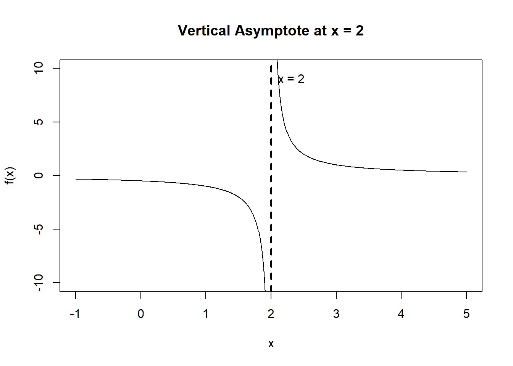
Figure 13.1: Function with a vertical asymptote at x = 2.
How to Find Vertical Asymptotes (Rational Functions)
For:
\[ f(x) = \frac{p(x)}{q(x)} \]
- Set the denominator equal to zero.
- Solve for x.
- Check that the function actually blows up near those values.
Horizontal Asymptotes
Horizontal asymptotes describe what happens as:
\[ x \to \infty \quad \text{and} \quad x \to -\infty \]
If:
\[ \lim_{x \to \infty} f(x) = L \quad \text{or} \quad \lim_{x \to -\infty} f(x) = L \]
then:
\[ y = L \]
is a horizontal asymptote.
Example 3 (Exponential Function)
\[ f(x) = e^{-x} \]
Compute:
\[ \lim_{x \to \infty} e^{-x} \]
As \(x \to \infty\), the exponent \(-x \to -\infty\), and:
\[ e^{-x} \to 0 \]
So:
\[ \lim_{x \to \infty} e^{-x} = 0 \]
✔ Horizontal asymptote (to the right):
\[ y = 0 \]
Now check the other direction:
\[ \lim_{x \to -\infty} e^{-x} \]
If \(x \to -\infty\), then \(-x \to \infty\), so:
\[ e^{-x} \to \infty \]
There is no horizontal asymptote as \(x \to -\infty\).
Example 4 (Using L’Hôpital’s Rule)
\[ f(x)=\frac{2x^2+1}{x^2-5} \]
We compute:
\[ \lim_{x\to\infty}\frac{2x^2+1}{x^2-5} \]
As \(x\to\infty\), both numerator and denominator \(\to \infty\), giving an \(\frac{\infty}{\infty}\) indeterminate form.
L’Hôpital’s Rule applies.
Differentiate numerator and denominator:
\[ = \lim_{x\to\infty}\frac{(2x^2+1)'}{(x^2-5)'} = \lim_{x\to\infty}\frac{4x}{2x} \]
Simplify:
\[ = \lim_{x\to\infty} 2 = 2 \]
✔ Horizontal asymptote:
\[ y = 2 \]
(The same limit holds as \(x \to -\infty\).)
Conceptual Understanding
- Vertical asymptotes describe behavior near a finite x-value.
- Horizontal asymptotes describe long-term behavior.
- A function can cross a horizontal asymptote.
- Horizontal asymptotes may differ as \(x \to \infty\) and \(x \to -\infty\).
Practice Problems
Part A — Find the Asymptotes
\[ f(x) = \frac{5}{x+1} \]
\[ f(x) = e^{-2x} \]
\[ f(x) = \frac{x^2 + 3x}{x^2 - 1} \]
\[ f(x) = \frac{7x}{x^3 + 2} \]
Part B — Conceptual
Why can horizontal asymptotes differ as \(x \to \infty\) and \(x \to -\infty\)?
Why must L’Hôpital’s Rule only be used for indeterminate forms?
If
\[ \lim_{x \to \infty} f(x) = 4, \] what does that tell you about the long-term behavior of the function?
Answer Key (Practice Problems)
Part A — Find the Asymptotes
1. \(\displaystyle f(x)=\frac{5}{x+1}\)
- Vertical asymptote: set denominator \(x+1=0 \Rightarrow x=-1\).
\[ \text{VA: } x=-1 \] - Horizontal asymptote: \[ \lim_{x\to\infty}\frac{5}{x+1}=0,\qquad \lim_{x\to-\infty}\frac{5}{x+1}=0 \] \[ \text{HA: } y=0 \]
2. \(\displaystyle f(x)=e^{-2x}\)
- No vertical asymptotes (the exponential function is defined for all real \(x\)).
- Horizontal behavior: \[ \lim_{x\to\infty}e^{-2x}=0 \Rightarrow \text{HA (right): } y=0 \] \[ \lim_{x\to-\infty}e^{-2x}=\infty \Rightarrow \text{no HA as } x\to-\infty \]
3. \(\displaystyle f(x)=\frac{x^2+3x}{x^2-1}\)
- Vertical asymptotes: denominator \(x^2-1=0 \Rightarrow x=\pm1\). \[ \text{VA: } x=-1,\; x=1 \]
- Horizontal asymptote (use a limit): \[ \lim_{x\to\infty}\frac{x^2+3x}{x^2-1} \overset{\text{L’Hôpital}}{=} \lim_{x\to\infty}\frac{2x+3}{2x} \overset{\text{L’Hôpital}}{=} \lim_{x\to\infty}\frac{2}{2}=1 \] Same result for \(x\to-\infty\). \[ \text{HA: } y=1 \]
4. \(\displaystyle f(x)=\frac{7x}{x^3+2}\)
- Vertical asymptote(s): solve \(x^3+2=0 \Rightarrow x=-\sqrt[3]{2}\).
\[
\text{VA: } x=-\sqrt[3]{2}
\]
- Horizontal asymptote:
\[
\lim_{x\to\infty}\frac{7x}{x^3+2}
\overset{\text{L’Hôpital}}{=}
\lim_{x\to\infty}\frac{7}{3x^2}=0
\]
Same for \(x\to-\infty\).
\[
\text{HA: } y=0
\]
Part B — Conceptual
5. Horizontal asymptotes can differ at \(+\infty\) and \(-\infty\) because the long-term behavior of a function can depend on direction. Some functions approach one value as \(x\to\infty\) but grow without bound or approach a different value as \(x\to-\infty\) (for example, \(e^{-x}\)).
6. L’Hôpital’s Rule is only valid for limits that produce an indeterminate form, such as
\(\frac{0}{0}\) or \(\frac{\infty}{\infty}\) (and a few others in transformed form). If the limit is not indeterminate, differentiating numerator and denominator can change the value and give the wrong result.
7. It means that as \(x\) gets very large, \(f(x)\) gets closer and closer to \(4\). In other words, the function’s long-term behavior approaches the constant value \(4\), so \(y=4\) is a horizontal asymptote (to the right).
Review Sheet: L’Hôpital’s Rule
What Is L’Hôpital’s Rule — and Why Do We Care?
When evaluating limits, we sometimes encounter expressions that do not immediately reveal their value.
In particular, we may see indeterminate forms, such as:
- \(\frac{0}{0}\)
- \(\frac{\infty}{\infty}\)
These forms are called indeterminate because they do not determine the limit on their own. The expression could approach many different values depending on how the numerator and denominator behave.
L’Hôpital’s Rule allows us to evaluate these limits by comparing the rates of change of the numerator and denominator.
This helps us understand:
- Relative growth rates
- Long-term dominance of functions
- Behavior near critical thresholds
When Can We Use L’Hôpital’s Rule?
L’Hôpital’s Rule applies only if:
- The limit produces an indeterminate form: \[ \frac{0}{0} \quad \text{or} \quad \frac{\infty}{\infty} \]
- The numerator and denominator are differentiable near the point.
- The resulting limit of derivatives exists (or can be evaluated).
Statement of L’Hôpital’s Rule
If:
\[ \lim_{x \to a} \frac{f(x)}{g(x)} \]
produces \(\frac{0}{0}\) or \(\frac{\infty}{\infty}\), then:
\[ \lim_{x \to a} \frac{f(x)}{g(x)} = \lim_{x \to a} \frac{f'(x)}{g'(x)} \]
provided the limit on the right exists.
Example 1 — A \(\frac{0}{0}\) Form
\[ \lim_{x \to 0} \frac{\sin x}{x} \]
Direct substitution gives:
\[ \frac{0}{0} \]
Apply L’Hôpital:
\[ = \lim_{x \to 0} \frac{(\sin x)'}{(x)'} = \lim_{x \to 0} \frac{\cos x}{1} = \cos(0) = 1 \]
✔ Final Answer:
\[ \boxed{1} \]
Example 2 — An \(\frac{\infty}{\infty}\) Form
\[ \lim_{x \to \infty} \frac{e^x}{x^2} \]
As \(x \to \infty\), both numerator and denominator \(\to \infty\).
Apply L’Hôpital:
\[ = \lim_{x \to \infty} \frac{e^x}{2x} \]
Still \(\frac{\infty}{\infty}\). Apply again:
\[ = \lim_{x \to \infty} \frac{e^x}{2} = \infty \]
✔ Conclusion:
\[ \boxed{\text{The limit diverges to } \infty} \]
This shows exponential growth eventually dominates polynomial growth.
Visual Example (Growth Comparison)
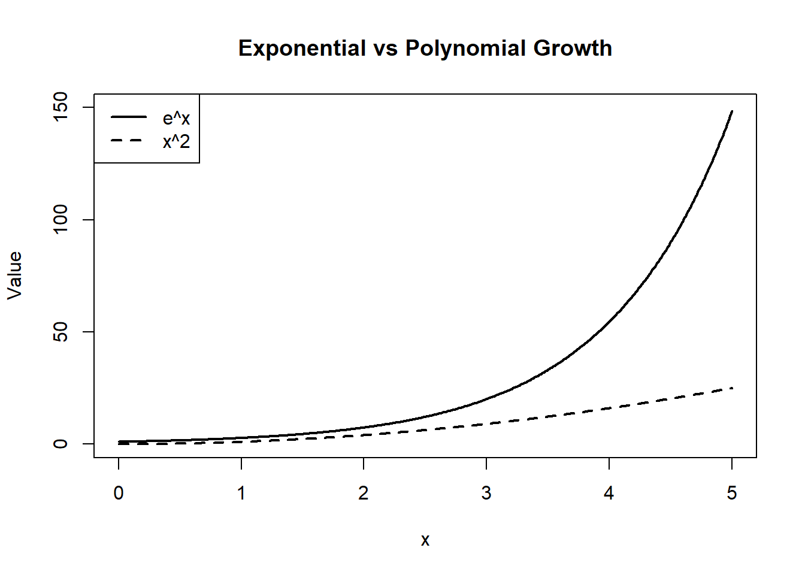
Figure 13.2: Comparison of exponential and polynomial growth.
You can see visually why:
\[ \frac{e^x}{x^2} \to \infty \]
Common Mistakes
- ❌ Using L’Hôpital when the limit is not indeterminate
- ❌ Forgetting to check the form first
- ❌ Differentiating only the numerator
- ❌ Stopping too early when the new limit is still indeterminate
Practice Problems
\[ \lim_{x \to 0} \frac{1 - \cos x}{x^2} \]
\[ \lim_{x \to \infty} \frac{\ln x}{x} \]
\[ \lim_{x \to 0} \frac{e^x - 1}{x} \]
\[ \lim_{x \to \infty} \frac{x^3}{e^x} \]
Explain why L’Hôpital’s Rule cannot be used immediately on: \[ \lim_{x \to 2} \frac{x^2 - 4}{x - 2} \]
Answer Key
1. \[ \lim_{x \to 0} \frac{1 - \cos x}{x^2} = \lim_{x \to 0} \frac{\sin x}{2x} = \lim_{x \to 0} \frac{\cos x}{2} = \frac{1}{2} \]
2. \[ \lim_{x \to \infty} \frac{\ln x}{x} = \lim_{x \to \infty} \frac{1/x}{1} = \lim_{x \to \infty} \frac{1}{x} = 0 \]
3. \[ \lim_{x \to 0} \frac{e^x - 1}{x} = \lim_{x \to 0} \frac{e^x}{1} = 1 \]
4. \[ \lim_{x \to \infty} \frac{x^3}{e^x} = \lim_{x \to \infty} \frac{3x^2}{e^x} = \lim_{x \to \infty} \frac{6x}{e^x} = \lim_{x \to \infty} \frac{6}{e^x} = 0 \]
5.
Direct substitution gives \(\frac{0}{0}\), so it is indeterminate.
However, simplifying first:
\[ \frac{x^2 - 4}{x - 2} = \frac{(x-2)(x+2)}{x-2} = x+2 \quad (x \neq 2) \]
So the limit equals:
\[ \lim_{x \to 2} (x+2) = 4 \]
L’Hôpital would work, but algebraic simplification is simpler.
Review Sheet: First and Second Derivative Sign Charts
Why Do We Care About Sign Charts?
The first and second derivatives tell us how a function behaves:
- Is the function increasing or decreasing?
- Where are the local maxima and minima?
- Is the graph curving upward or downward?
- Where does the curvature change?
Sign charts organize this information in a clean, visual way. They help us move from formulas to graph behavior.
First Derivative Sign Charts
What Does the First Derivative Tell Us?
The sign of \(f'(x)\) determines whether a function is increasing or decreasing:
- If \(f'(x) > 0\), the function is increasing
- If \(f'(x) < 0\), the function is decreasing
Critical points occur where:
\[ f'(x) = 0 \quad \text{or} \quad f'(x) \text{ is undefined} \]
These are potential locations of local maxima or minima.
Example 1
\[ f(x) = x^3 - 3x \]
Step 1: Compute the derivative
\[ f'(x) = 3x^2 - 3 = 3(x^2 - 1) = 3(x-1)(x+1) \]
Step 2: Find critical points
\[ f'(x) = 0 \Rightarrow x = -1, 1 \]
Step 3: Make a sign chart
Test values in each interval:
- \(x < -1\) → choose \(x = -2\)
- \(-1 < x < 1\) → choose \(x = 0\)
- \(x > 1\) → choose \(x = 2\)
Sign of \(f'(x)\):
- On \((-\infty,-1)\): positive
- On \((-1,1)\): negative
- On \((1,\infty)\): positive
Sign chart:
\[ (+) \quad | \quad (-) \quad | \quad (+) \]
Conclusion:
- Local minimum at \(x = -1\)
- Local maximum at \(x = 1\)
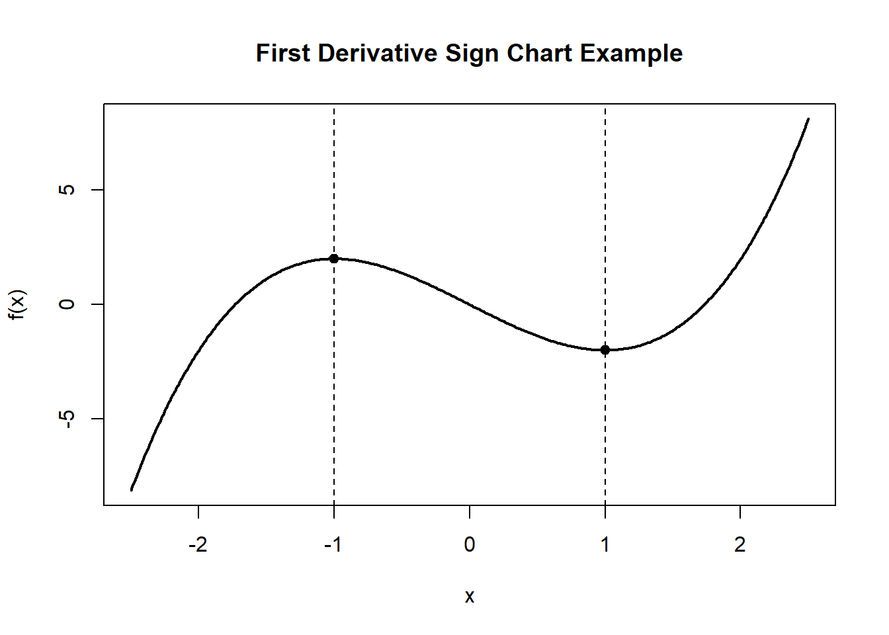
Figure 13.3: Using critical points to determine increasing and decreasing behavior.
Second Derivative Sign Charts
What Does the Second Derivative Tell Us?
The sign of \(f''(x)\) determines concavity:
- If \(f''(x) > 0\), the graph is concave up
- If \(f''(x) < 0\), the graph is concave down
Possible inflection points occur where:
\[ f''(x) = 0 \]
An inflection point requires a change in concavity.
Example 2
Using the same function:
\[ f(x) = x^3 - 3x \]
Step 1: Compute second derivative
\[ f''(x) = 6x \]
Step 2: Solve \(f''(x) = 0\)
\[ 6x = 0 \Rightarrow x = 0 \]
Step 3: Sign chart
- For \(x < 0\): \(f''(x) < 0\) → concave down
- For \(x > 0\): \(f''(x) > 0\) → concave up
Sign chart:
\[ (-) \quad | \quad (+) \]
Conclusion:
Inflection point at:
\[ (0, f(0)) = (0,0) \]
![Graph of the function f(x) equals x cubed minus 3x over the interval from about negative 2.6 to 2.6. The curve has a local maximum at the point negative 1 comma 2 and a local minimum at the point 1 comma negative 2. An inflection point is marked at the origin, where the graph changes concavity. The left half of the graph is shaded to indicate concave down behavior for x less than 0, and the right half is shaded to indicate concave up behavior for x greater than 0. The figure illustrates how critical points and concavity together describe the overall shape of the curve, while also noting that the function has no global maximum or minimum because it is unbounded.](environmental-precalculus_files/figure-html/curve-sketching-cubic-labeled-1.png)
Figure 13.4: Curve sketch of a cubic showing extrema, inflection point, and concavity.
Practice Problems
- \[ f(x) = x^4 - 4x^2 \]
- Find critical points
- Create a first derivative sign chart
- Identify local extrema
- Find possible inflection points
- \[ f(x) = x^3 - 6x^2 + 9x \]
- Find \(f'(x)\)
- Make a sign chart
- Classify extrema
- Determine concavity and inflection points
- Conceptual
- Why does a sign change in \(f'(x)\) indicate a maximum or minimum?
- Why must concavity change for a true inflection point?
- Can a function have a critical point that is not an extremum? Explain.
Answer Key
\[ f'(x) = 4x^3 - 8x = 4x(x^2 - 2) \]
Critical points: \[ x = 0, \pm\sqrt{2} \]
Sign chart shows: - Local max at \(x = 0\) - Local mins at \(x = \pm\sqrt{2}\)
Second derivative: \[ f''(x) = 12x^2 - 8 \]
Solve: \[ 12x^2 - 8 = 0 \Rightarrow x = \pm\sqrt{\frac{2}{3}} \]
Inflection points occur there.
\[ f'(x) = 3x^2 - 12x + 9 = 3(x-1)(x-3) \]
Critical points: \[ x = 1, 3 \]
Sign chart: - Local max at \(x = 1\) - Local min at \(x = 3\)
Second derivative: \[ f''(x) = 6x - 12 \]
Inflection point at: \[ x = 2 \]
- Conceptual
- A sign change in \(f'(x)\) means the function switches from increasing to decreasing (or vice versa).
- An inflection point requires concavity to change.
- Yes, a critical point can occur without a sign change (e.g., flat inflection point).
Review Sheet: Sketching a Function from Sign Charts and Asymptote Behavior
Why This Feels Hard — and the Big Idea
You learned these skills separately:
- first derivative sign charts (increasing/decreasing)
- second derivative sign charts (concavity)
- asymptotes (vertical + horizontal)
- intercepts and key points
…but then I’m asking you to combine everything into one sketch.
The big idea is:
Build the graph in layers.
Start with the “skeleton” (asymptotes + end behavior), then add the “motion” (increasing/decreasing), then add the “curvature” (concavity), and finally place key points.
The Layer Method (A Reliable Checklist)
Layer 0: Domain + Discontinuities
- Identify where the function is undefined.
- Mark those x-values as possible vertical asymptotes.
- Split the x-axis into intervals using those x-values.
Layer 1: Asymptotes + End Behavior
- Draw any vertical asymptotes \(x=a\) as dashed lines.
- Use given end behavior (or limits) to draw horizontal asymptotes \(y=L\) if they exist.
- Decide what the curve does near each asymptote (up to \(+\infty\) or down to \(-\infty\) on each side).
- Decide what the curve does as \(x\to\pm\infty\) (approach a line or diverge).
Layer 2: First Derivative Sign Chart (Direction)
On each interval:
- \(f'(x) > 0\): increasing
- \(f'(x) < 0\): decreasing
Use sign changes at critical points to label local extrema.
Layer 3: Second Derivative Sign Chart (Curvature)
On each interval:
- \(f''(x) > 0\): concave up
- \(f''(x) < 0\): concave down
Inflection points require a change in concavity.
Layer 4: Anchor Points
Add any given points (intercepts, values at critical points, etc.) to “lock” the sketch in place.
A Worked Example
We’ll use a concrete function that has two vertical asymptotes, a horizontal asymptote, a local max and min, and inflection point(s):
\[ f(x)=2+\frac{x^3-3x}{(x^2-1)^2}. \]
This function has:
- Vertical asymptotes: \(x=-1\) and \(x=1\)
- Horizontal asymptote: \(y=2\) (since the rational part \(\to 0\) as \(x\to\pm\infty\))
- Local min at \(x=-\sqrt{3+2\sqrt{3}}\approx -2.542\)
- Local max at \(x=\sqrt{3+2\sqrt{3}}\approx 2.542\)
- Inflection points at \(x=-\sqrt{5+2\sqrt{10}}\approx -3.365\), \(x=0\), and \(x=\sqrt{5+2\sqrt{10}}\approx 3.365\)
Also note: \[ f(0)=2. \]
Step 1: Draw the Asymptotes (Skeleton)
![Coordinate plane showing the asymptotes of a rational function before the full curve is drawn. Two dashed vertical lines mark vertical asymptotes at x equals negative 1 and x equals 1. A dashed horizontal line marks a horizontal asymptote at y equals 2. Arrows near x equals negative 1 indicate the function approaches positive infinity from both sides of that asymptote, while arrows near x equals 1 indicate the function approaches negative infinity from both sides. The figure provides the asymptotic structure used to sketch the full graph.](environmental-precalculus_files/figure-html/asymptote-skeleton-step1-1.png)
Figure 13.5: Skeleton graph showing vertical and horizontal asymptotes.
Step 2: Add a Known Point (Anchor)
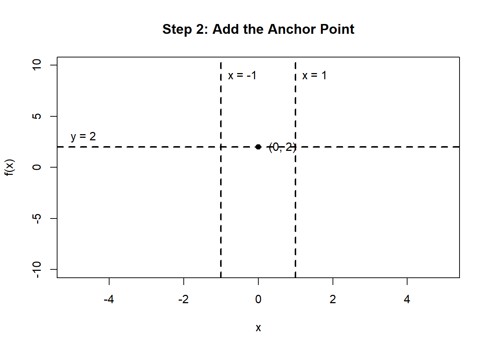
Figure 13.6: Adding an anchor point to the asymptote skeleton.
Step 3: Add Increasing/Decreasing Direction (from \(f'(x)\))
For this function, the critical points (turning points) are:
\[ x=\pm\sqrt{3+2\sqrt{3}} \approx \pm 2.542. \]
- Decreasing on \((-\infty,-2.542)\)
- Increasing on \((-2.542,-1)\)
- Decreasing on \((-1,1)\)
- Increasing on \((1,2.542)\)
- Decreasing on \((2.542,\infty)\)
So there is: - a local minimum at \(x\approx -2.542\) - a local maximum at \(x\approx 2.542\)
![Graph showing the asymptote skeleton of a rational function with dashed vertical lines at x equals negative 1 and x equals 1, a dashed horizontal line at y equals 2, and an anchor point at 0 comma 2. Two additional critical points are marked, one to the left of x equals negative 1 labeled local minimum and one to the right of x equals 1 labeled local maximum. Along the bottom of the graph, arrows and labels indicate intervals where the function is increasing or decreasing. The function decreases, then increases before the left asymptote, decreases between the asymptotes, increases just to the right of the right asymptote, and then decreases again. The figure shows how derivative information helps organize the overall shape before drawing the full curve.](environmental-precalculus_files/figure-html/asymptote-skeleton-step3-1.png)
Figure 13.7: Adding increasing and decreasing behavior to the asymptote skeleton.
Step 4: Add Concavity (from \(f''(x)\))
Inflection points occur at:
\[ x=-\sqrt{5+2\sqrt{10}},\quad x=0,\quad x=\sqrt{5+2\sqrt{10}} \] \[ \approx -3.365,\ 0,\ 3.365. \]
Concavity by intervals (matching the sign of \(f''\)):
- Concave down on \((-\infty,-3.365)\)
- Concave up on \((-3.365,-1)\)
- Concave up on \((-1,0)\)
- Concave down on \((0,1)\)
- Concave down on \((1,3.365)\)
- Concave up on \((3.365,\infty)\)
![Graph showing the asymptote skeleton of a rational function with dashed vertical lines at x equals negative 1 and x equals 1, a dashed horizontal line at y equals 2, and shaded regions indicating concavity. Blue-tinted regions mark intervals where the graph is concave down, and green-tinted regions mark intervals where the graph is concave up. Three inflection points are marked and labeled: one on the left branch, one at x equals 0 on the middle branch, and one on the right branch. The point at 0 comma 2 is also marked as an anchor point. The figure shows how second-derivative information identifies where the curve bends upward or downward and where concavity changes.](environmental-precalculus_files/figure-html/asymptote-skeleton-step4-1.png)
Figure 13.8: Adding concavity and inflection points to the asymptote skeleton.
![Graph of a rational function over the interval from negative 5 to 5 showing the completed sketch built from all earlier layers. The function has three branches separated by dashed vertical asymptotes at x equals negative 1 and x equals 1, and it approaches a dashed horizontal asymptote at y equals 2. A labeled anchor point is marked at 0 comma 2 on the middle branch. A local minimum is marked on the left branch and a local maximum is marked on the right branch. Inflection points are indicated at x equals 0 and at symmetric points on the left and right branches. The figure summarizes how asymptotes, first-derivative behavior, second-derivative behavior, and anchor points combine to produce the final graph.](environmental-precalculus_files/figure-html/asymptote-skeleton-step5-1.png)
Practice: Build a Sketch from Information
For each problem:
- Sketch asymptotes (if any).
- Mark given points.
- Use \(f'(x)\) for increasing/decreasing.
- Use \(f''(x)\) for concavity.
- Draw a smooth curve consistent with all information.
Practice 1 — Vertical + Horizontal Asymptotes
You are told:
- Vertical asymptote: \(x = 2\)
- Horizontal asymptote: \(y = 1\)
- \(\lim_{x \to 2^-} f(x) = +\infty\), \(\lim_{x \to 2^+} f(x) = -\infty\)
- Point: \(f(0)=0\)
Tasks:
Sketch the asymptotes, and sketch a curve consistent with the limits.
Solution Plot (Annotated)
One example function that matches the asymptotes and one-sided behavior is: \[ f(x)=1-\frac{1}{x-2}. \] It has: - VA at \(x=2\) - HA at \(y=1\) - \(x\to 2^- \Rightarrow f(x)\to +\infty\), \(x\to 2^+ \Rightarrow f(x)\to -\infty\)
![Graph of the function f(x) equals 1 minus 1 divided by the quantity x minus 2. The graph has two branches separated by a vertical asymptote at x equals 2, shown as a dashed line. A horizontal asymptote at y equals 1 is also shown as a dashed line. The left branch lies below the horizontal asymptote and decreases toward negative infinity as x approaches 2 from the left. The right branch lies above the horizontal asymptote and decreases toward negative infinity as x approaches 2 from the right, while both branches approach y equals 1 as x moves away from the asymptote.](environmental-precalculus_files/figure-html/rational-practice1-annotated-1.png)
Figure 13.10: Annotated graph of a rational function showing vertical and horizontal asymptotes.
Practice 2 — Local Max and Local Min (from \(f'(x)\))
You are told:
- No vertical asymptotes
- \(f'(x) > 0\) on \((-\infty,-1)\)
- \(f'(x) < 0\) on \((-1,1)\)
- \(f'(x) > 0\) on \((1,\infty)\)
Tasks:
1. Identify the local max/min from the sign changes in \(f'\).
2. Sketch a curve consistent with the information.
Solution Plot (Annotated)
From the sign chart:
- \(+\to-\) at \(x=-1\) \(\Rightarrow\) local maximum at \(x=-1\)
- \(-\to+\) at \(x=1\) \(\Rightarrow\) local minimum at \(x=1\)
One simple example function with those features is: \[ f(x)=(x+1)^2(x-2). \] (This is just one valid example.)

Figure 13.11: Annotated graph of a cubic polynomial showing turning points.
Practice 3 — Point of Inflection and Curvature Change (from \(f''(x)\))
You are told:
- No asymptotes
- \(f''(x) < 0\) on \((-\infty,0)\)
- \(f''(x) > 0\) on \((0,\infty)\)
Tasks:
1. Identify where the inflection point must occur.
2. Sketch a curve that is concave down for \(x<0\) and concave up for \(x>0\).
Solution Plot (Annotated)
Concavity changes at \(x=0\), so ) is an inflection point.
A simple example is: \[ f(x)=x^3+2, \] since \(f''(x)=6x\) changes sign at \(x=0\).
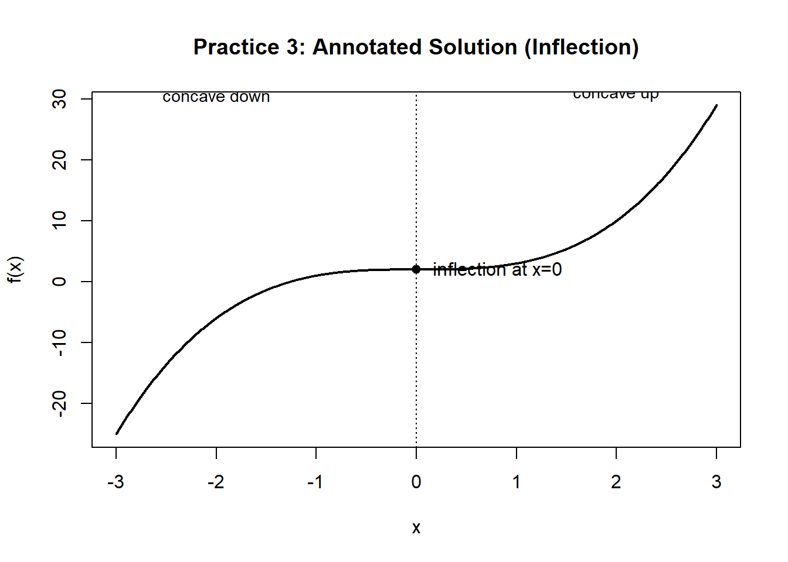
Figure 13.12: Annotated graph showing an inflection point and concavity change.
Practice 4 — Two Vertical Asymptotes + Horizontal Asymptote + Inflection
You are told:
- Vertical asymptotes: \(x=-1\) and \(x=1\)
- Horizontal asymptote: \(y=2\)
- \(x\to -1^- \Rightarrow f(x)\to -\infty\), \(x\to -1^+ \Rightarrow f(x)\to -\infty\)
- \(x\to +1^- \Rightarrow f(x)\to +\infty\), \(x\to +1^+ \Rightarrow f(x)\to +\infty\)
- No max/min
- \(f''(x)\) changes sign at \(x=0\) from - to +
- \(f''(x) <0\) for \(x<-1\)
- \(f''(x) >0\) for \(x>1\)
Tasks:
1. Sketch the asymptotes.
3. Sketch branches consistent with the asymptotes and include an inflection at \(x=0\).
Solution Plot (Annotated)
![Graph of the function f(x) equals 2 plus x cubed divided by the quantity x squared minus 1 squared. The graph has three branches separated by vertical asymptotes at x equals negative 1 and x equals 1, shown as dashed lines. A horizontal asymptote at y equals 2 is also shown. A point at 0 comma 2 is marked on the middle branch. A dashed vertical line at x equals 0 indicates a change in curvature, showing an inflection point on the central branch. The figure illustrates asymptotic behavior together with a curvature change in the interior of the domain.](environmental-precalculus_files/figure-html/rational-practice4-annotated-1.png)
Figure 13.13: Annotated graph of a rational function with asymptotes and curvature change.